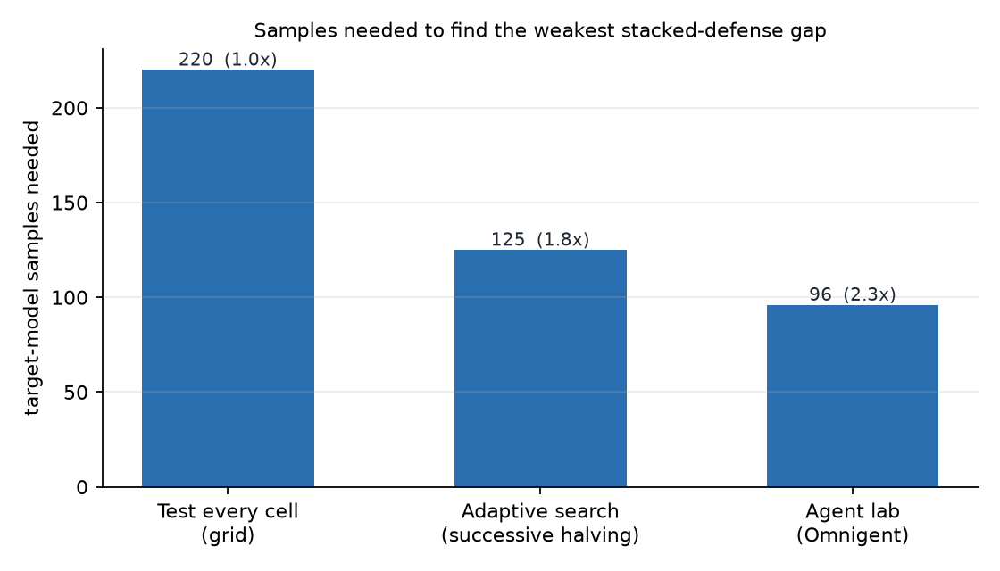

An Omnigent agent lab tested whether stacked prompt-injection defenses add up. This page loads the lab's real results straight from the repository: every number links to raw model outputs.
Reading results/cache.jsonl
Target-model samples needed to identify the weakest stacked-defense cell.
